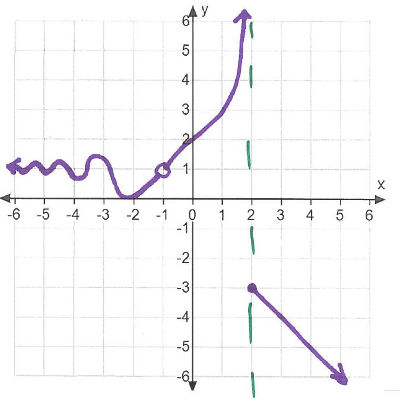

- (a)
- State the domain of \(f\).
- (b)
- Find the following values or state "does not exist":
- (i)
- \(\lim _{x \to 2^-} f(x)=\)
- (ii)
- \(\lim _{x \to 2^+} f(x)=\)
- (iii)
- \(\lim _{x \to 2} f(x)=\)
- (iv)
- \(\lim _{x \to -1} f(x)=\)
- (v)
- \(\lim _{x \to 3} f(x)=\)
- (vi)
- \(\lim _{x \to -\infty } f(x)=\)
- (vii)
- \(f(-1)=\)
- (c)
- State the equation of any vertical asymptotes.
- (d)
- State the equation of any horizontal asymptotes.
- (e)
- Find the Intervals of Continuity.